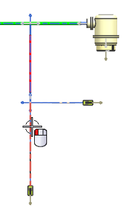
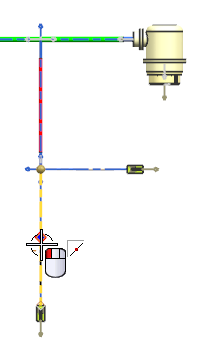
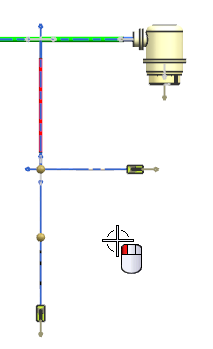
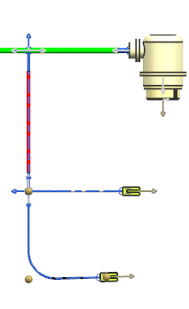

Modify paths by bending them
-
On the Formboard Tools toolbar, from the Formboard Path Orientation Drop–down list, select Shape Segment
 .
.
-
From the Type list, select Radial Bend.
Begin by bending the lower 4–pin segment 90 degrees to the right.
-
Select the 4–pin segment.

-
Select the mid point of the segment for the first pivot point.

-
Select the second pivot point to the right of the first so that it bends at approximately 90 degrees. It does not need to be exact.

The preview image shows that you have the correct bend on this branch.

-
Click Apply.